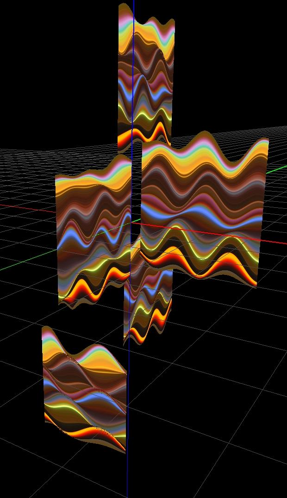

Design and Fabrication
Introduction
Dimensions: approximately 1.5 metres tall, each sign ~ 320 x 270 mm Materials: Electronics, leds, toughened glass, support structure. There shall be a collaboration between the design and industrial production methods for electronic circuits available with Eurecat and the imagination, knowledge and experience of the Artist in creating light sculpture and the custom software and control systems for them. The following is a description of the techniques.
The following is a description of the specific techniques Eurecat would use for this project. |
 |
| The size of features on circuits is shrinking all the time. The photo shows a typical example but this is not close to the lower limit, which is now much smaller than a mm. The choice of components shall in part depend upon the Eurecat's pick and place machine. This is an industrial device dedicated to ‘picking’ components from reels as they come supplied and ‘placing’ them onto the circuit. The machine carries out this process until all the components are in place. Each is a ‘surface mount device’, SMD. It is placed on prepared patches of solder paste. A brief and precisely controlled cycle of heating then follows melting the solder while leaving components unharmed. This entirely automated method of creating circuits makes miniaturization of components and circuits possible and is a huge cost saving. The price of components meanwhile is also dropping and when bought in industrial quantities is no more than a few cents apiece. |
The Euracat machine has a working area not exceeding 320 x 415 mm, which in practice is limited by a ‘waffle tray’ to 320 x 270 mm. From this size constraint follows my idea of making ’signs’ each about the maximum size possible. The next consideration is precision, how small a component can be placed, and this requires fine movements and exact repeatability. The Eurecat machine can place components as small as 0.6 x 0.3 mm.
|
| In the old days components had wires jutting out of them that were threaded through holes in the circuit board. In today's surface mount components the wires have been replaced with small contacts. This change in design makes it possible to place them automatically. The component shown on the left has a red, green and blue led all mounted inside the same package.From a distance the colours mix together. By varying the relative brightness of these three light emitters, the total light emitted can take on any colour, brightness or hue. This particular component has a footprint of 5 x 6 mm. The process of miniaturisation continues and currently the smallest 3 chip leds on the market are just 0.5 mm x 0.5 mm, slightly smaller than Eurecat's machine can handle but the Eurecat machine would work fine with 1.0 x 1.0 mm chips or any larger. These developments in miniaturisation are happening fast. I have used chips like the one in the photo but not the smaller sizes. It would be best to view the process of creation as a research project where we deliberately do not make a final decision at this stage. I propose testing the 1.0 x 1.0 and also for comparison some of the larger sizes. The idea of smallness is certainly appealing from an artistic point of view as they will give qualities of finesse and intimacy to the artwork as the viewer will be drawn closer to look at the fine detail. However these smallest leds do not yet have the high colour rendering index the larger chips possess, so I shall make a choice based on my judgement of how the samples look. |
Artist's Background Skills and Design Collaboration
I have a long experience of writing software using the Delphi programming language, having started on Delphi 1 and remained faithful to this language. This is primarily a Windows based programming environment although later versions can now create apps, this is not necessary, as Windows based computers have themselves been shrinking and now can be almost as small as a smart phone. This has allowed me to continue an unbroken line in developing control software for my light sculpture, re-using and developing ideas over a long period of time.
These ultra-small NUC Windows computers are fully functioning and include core i7 versions. I used one for the first time earlier this year when I sold a large installation to the Singapore Science Centre. The gadget can be hidden almost anywhere, it can be programmed to switch itself on and off at predetermined times, and has a solid state hard disc that should be reliable for many years. The custom software shall change the display in an endless and non-repeating way using algorithms, combined with specific ideas about colour and contrast that are stored as Artist’s files. This is output as a USB data and converted to a form that microchips embedded on the display can read. In principle this could be high bandwidth. For this proposal I have chosen to limit this so I can use readymade modules based on protocols I am familiar with and have worked with on previous projects. |
| The USB shall be converted to DMX using the Nicolaudie SIUDI-8C DMX device and the data read on the display circuit by the Worldsemi WS2821A or B chip. The chips are designed specifically for control of leds and are only marginally larger, just over 1 mm thick and with an area of 5 x 5 mm. The small computer and converter module shall be tucked out of site either in the base or ceiling, depending on the final design. | |
To achieve the sculptural quality of something that can be viewed from all sides, I propose to use the leds in pairs. Surface mount leds lights shine into the front hemisphere only so the signs shall be formed of two printed circuits mounted back to back, one a mirror image of the other, with pairs of leds facing out on either side.
Here is my Artist impression of a close up view of part of the contours lines on the display. The control chips together with the entire circuit shall be in plain sight surrounding the leds. This is not shown on this first simple visualisation, but it can be seen on the drawing that follows. Although not obvious at first glance, anyone who takes the trouble to scrutinise the artwork closely shall see all these electronic details. This shall be a technical work of art with the circuits showing. Optionally I may choose to partially obscure these details and soften the quality of the light by sand blasting the glass sheets that the circuits are sandwiched between. Sand blasted glass produces a very attractive translucent quality which still has a hint of transparency. |
And here in much closer detail again is a view of how the individual leds could be placed and how the tracks would be laid to the individual leds. In this example we see the layout for three 1.0 x 1.0 mm chips, with just 0.2 mm offset allowed between adjacent components. This would be the smallest level of detail possible.
|
There are two different designs for the support structure I am considering. It could be styled literally like a road sign with a central supporting pillar holding signs pointing in different directions. Alternatively the signs could be suspended from semi invisible stainless steel wires dropped down from the ceiling. For now I have not developed modelling of this. The opening animation shows signs apparently floating in the air. Using a wire support system, I can get pretty close to this. The number of signs is not final and fixed. The sequence shows five but was designed and recorded before the production costs were known and was based on an estimate. For simplicities sake when creating the animation, the same sign was cloned. In reality the changing colours of the displays would be different on each sign.
I shall personally undertake all the work of developing the software and constructing the other parts of the light sculptures so Eurecat can focus their attention on making the electronic signs. Much of this other work can be carried out in my studio, I shall consult with them at each stage so they can give their advice and input about fabrication of other parts. Final assembly can be at Parc Científic i de la Innovació Tecno Campus, Mataró.